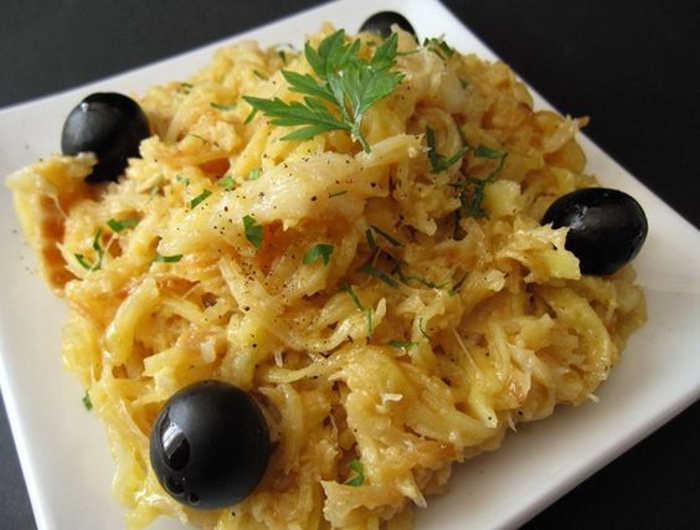

Bacalhau à Brás
home

Bacalhau à Brás
Is a typical portuguese dish, amazing flavour a mix of potatoes
with eggs and the fish called Bacalhau from Norway
Ingredients
- fried potatoes
- 4 eggs
- Bacalhau
Steps
- first cook the bacalhau
- then add the potatoes
- then add the eggs
- and at the end you can choose to
add some green flavour to it, like salsa.